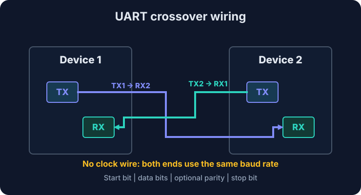
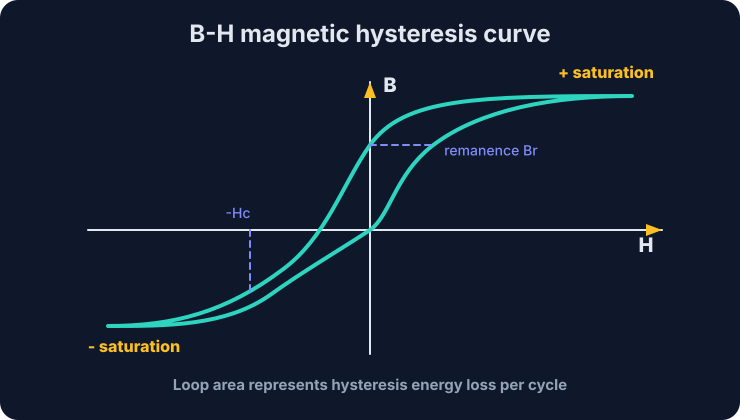

protocols-uart-what-is-uart-and-how-does-it-synchronize-communication / image_1
UART crossover wiring uart_crossover

Prompt
A block diagram of two devices communicating via UART. Device 1 and Device 2 each have a TX (Transmit) and RX (Receive) pin. A wire connects Device 1's TX to Device 2's RX, and another wire connects Device 2's TX to Device 1's RX, illustrating the required crossover wiring.
passives-inductors-and-magnetics-draw-the-b-h-magnetic-hysteresis-curv / image_1
B-H magnetic hysteresis curve bh_hysteresis

Prompt
A B-H hysteresis curve graph. The x-axis is H (Current / Magnetic Field Strength) and the y-axis is B (Magnetic Flux Density). The curve is a wide, S-shaped loop. The top right and bottom left tips of the 'S' are completely flattened horizontally and labeled "Saturation Region".